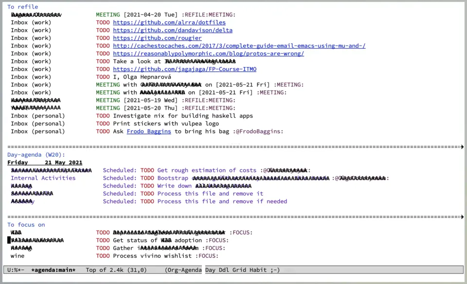

Task management with org-roam Vol. 7: Capture
Capturing is one of the most important activities in the task management process. Previously we talked about storing and querying tasks and now it’s time to cover capturing of tasks, meeting notes and inbox.
Please note that the goal is not to discuss GTD or any other methodology, but rather to discover how org-roam combined with everything we talked previously may help you to improve your capturing process regardless of methodology you are using.
Org Mode Capture lets you quickly store notes with zero interruption of your work flow. And capture is ridiculously powerful in Org Mode, as you can build so many things on top of it. For example, you can setup a full-blown journal with simple template, automatically put TODO entries when capturing a link to GitHub or Jira issue, etc.
;; you don't really need much, do you?
(setq org-capture-templates
'(("j" "Journal entry" plain
(file+olp+datetree "~/path/to/journal.org")
"%K - %a\n%i\n%?\n"
:unnarrowed t)))Over the years of using Org Mode for task management I’ve got a habit of clearing my head of any actionable items and thoughts that I can’t allow myself to spend time and cognitive resources now thus highly reducing my stress level. For some people it allows to maintain focus, and since my work is mostly about constant context switching, it also allows me to stay sane.
For this to work, any task management system must have the following properties.
- Capturing must be as fast as possible, which also implies ease of capturing.
- There must be a way to easily review all captured items and process them when you have time.
The speed and convenience of capture process is plain simple to understand. If it takes more than few seconds, it disturbs you from the current task at hand more and more, meaning that you will stop capturing at some point of time. If you need to go to the 6th floor and unlock your precious planner from the safe in order to capture something, it means that you will stop capturing.
In general, this means that it’s totally fine to use phone (even non-org based solution) or piece of paper to write something down. You’ll just have few sources to process captured items from when you have time.
Due to the nature of capture process, where you do it as fast as possible, these captured items might be… lacking better description, located in wrong place, irrelevant or beginning of something bigger. This is why it’s important to process all captured items and process them when you have time for that.
Inbox
When it comes to Org Mode, I prefer to have a dedicated inbox file per machine, so I can avoid sync issues as I might capture without internet connection. So I define my inbox file:
(defvar vulpea-capture-inbox-file
(format "inbox-%s.org" (system-name))
"The path to the inbox file.
It is relative to `org-directory', unless it is absolute.")Every inbox file has a title to distinguish between multiple inbox files and filetags that is inherited by all TODO entries in this file, so that I can quickly pull whatever I need to process. In my case I am using REFILE tag.
:PROPERTIES:
:ID: d272271d-7585-4913-9445-d7d97b59295d
:END:
#+title: Inbox (personal)
#+filetags: REFILECapturing into inbox
In order for items to end up in the inbox file, I am using a simple capture template for TODO entries. And since I want to avoid picking template when I have more than one, I have a wrapper vulpea-capture-task function that picks up specific template. There are other ways to achieve that, if you are interested let me know.
(setq org-capture-templates
'(("t" "todo" plain (file vulpea-capture-inbox-file)
"* TODO %?\n%U\n" :clock-in t :clock-resume t)))
(defun vulpea-capture-task ()
"Capture a task."
(interactive)
(org-capture nil "t"))Processing inbox

In order to process all inbox files managed by Org Mode we have wonderful org-agenda. My default agenda consists of various blocks, but the very first one lists all entries with REFILE tag (thanks to filetags all entries in inbox files are tagged accordingly).
(setq org-agenda-custom-commands
'((" " "Agenda"
((tags
"REFILE"
((org-agenda-overriding-header "To refile")
(org-tags-match-list-sublevels nil)))))))Now I can perform my routine on inbox entries by removing irrelevant entries, performing actions that can be performed now, moving tasks to relevant projects, processing meeting notes by producing more notes or tasks. Well, routine.
Agenda builds fast thanks to trick described in Dynamic and fast agenda.
Dynamically selecting capture location
At this point you might be wondering how it’s related to Org Roam. After all, up to this moment we didn’t use any Org Roam features. And what is the core feature of Org Roam? IMO, it’s fast query capabilities - this is something we’ve been using in almost every post of series.
It’s hard to come up with generic example, and I hate examples from the void of someones imagination, so let me describe where exactly in the capturing process I use it (apart from Automatic tagging). Hopefully, it’s easy to adapt this idea for other use cases, and if you experience any troubles, don’t hesitate to contact me.
Meeting notes. Whenever I am on a meeting, I love to keep meeting notes (thanks to Org Mode my memory is ephemeral). I divide all meetings in two categories - one-on-ones (e.g. p = 2) and meetings with multiple participants (e.g. p > 2). And in the end, all meetings from one-on-ones are moved under Meetings outline in the file related to person I have a meeting with. And since it is so common I decided to save myself from unnecessary refile action by adapting my capture flow.
So when a have a meeting, I simply hit M-m c m (short for ‘capture meeting’ which calls vulpea-capture-meeting), select a person or type any other phrase (e.g. project name) and let the capture process to place my notes in the right location. If I select a person, meeting notes are going to be located under Meetings heading in the file dedicated to the selected person. If I type something else, my notes go straight the inbox.
Person selection is possible by using vulpea-select from vulpea library (the same as we did in Select a person and view related tasks). In order for my meetings notes related to specific person to fall into my inbox, I tag them with REFILE tag directly (unlike notes in inbox file, which get tag via inheritance).
The code is pretty straightforward and available on GitHub. First we setup a new template, which is responsible for capturing meeting notes. The cool part about capture process in Org Mode is that you can use functions to determine capture location and capture body, so this is what we are using here - vulpea-capture-meeting-target and vulpea-capture-meeting-template.
(setq org-capture-templates
'(("t" "todo" plain (file vulpea-capture-inbox-file)
"* TODO %?\n%U\n" :clock-in t :clock-resume t)
("m" "Meeting" entry
(function vulpea-capture-meeting-target)
(function vulpea-capture-meeting-template)
:clock-in t
:clock-resume t)))
(defun vulpea-capture-meeting ()
"Capture a meeting."
(interactive)
(org-capture nil "m"))The funny thing is that these functions are called in the following order:
vulpea-capture-meeting-templatevulpea-capture-meeting-target
Meaning that we need to present a list of people in the template phase and then access it somehow in target phase. Fortunately, there is an API in capture process allowing to store extra information for the duration of capture process - org-capture-put and org-capture-get.
(defun vulpea-capture-meeting-template ()
"Return a template for a meeting capture."
(let ((person (vulpea-select
"Person"
:filter-fn
(lambda (note)
(let ((tags (vulpea-note-tags note)))
(seq-contains-p tags "people"))))))
(org-capture-put :meeting-person person)
(if (vulpea-note-id person)
"* MEETING [%<%Y-%m-%d %a>] :REFILE:MEETING:\n%U\n\n%?"
(concat "* MEETING with "
(vulpea-note-title person)
" on [%<%Y-%m-%d %a>] :MEETING:\n%U\n\n%?"))))So first we select a person via vulpea-select and store it via org-capture-put, so we can access it in vulpea-capture-meeting-target function. vulpea-select always return a note, but in case result doesn’t contain an id, it means that the note doesn’t exist. In our case that means that we want to place meeting notes in the inbox file and the heading must contain the name of the group we are having meeting with. In case it’s a real person, there is no need to add name in the heading, but we need an extra tag - REFILE, so Inbox agenda picks it up.
(defun vulpea-capture-meeting-target ()
"Return a target for a meeting capture."
(let ((person (org-capture-get :meeting-person)))
;; unfortunately, I could not find a way to reuse
;; `org-capture-set-target-location'
(if (vulpea-note-id person)
(let ((path (vulpea-note-path person))
(headline "Meetings"))
(set-buffer (org-capture-target-buffer path))
;; Org expects the target file to be in Org mode, otherwise
;; it throws an error. However, the default notes files
;; should work out of the box. In this case, we switch it to
;; Org mode.
(unless (derived-mode-p 'org-mode)
(org-display-warning
(format
"Capture requirement: switching buffer %S to Org mode"
(current-buffer)))
(org-mode))
(org-capture-put-target-region-and-position)
(widen)
(goto-char (point-min))
(if (re-search-forward
(format org-complex-heading-regexp-format
(regexp-quote headline))
nil t)
(beginning-of-line)
(goto-char (point-max))
(unless (bolp) (insert "\n"))
(insert "* " headline "\n")
(beginning-of-line 0)))
(let ((path vulpea-capture-inbox-file))
(set-buffer (org-capture-target-buffer path))
(org-capture-put-target-region-and-position)
(widen)))))Now it become a little bit more verbose, but this code is actually dead simple. It is borrowed from org-capture-set-target-location and unfortunately, I could not find a way to properly reuse it.
First we get a person note that we selected in vulpea-capture-meeting-template via org-capture-get and if it has an id, that means that we need to place the note under Meetings headline, otherwise it just goes straight to vulpea-capture-inbox-file.
That’s it!
Task Management with org-roam Series
- Path to Roam
- Categories
- FILETAGS
- Automatic tagging
- Dynamic and fast agenda
- Select a person and view related tasks
- Capture
References
- Org Mode Capture
- Org Mode Tag Inheritance
- lib-vulpea-capture - personal configurations for Org capture process